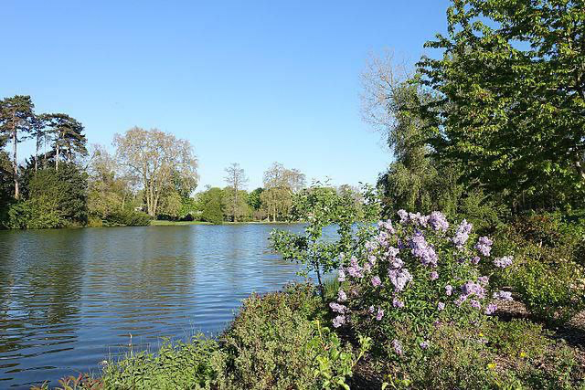
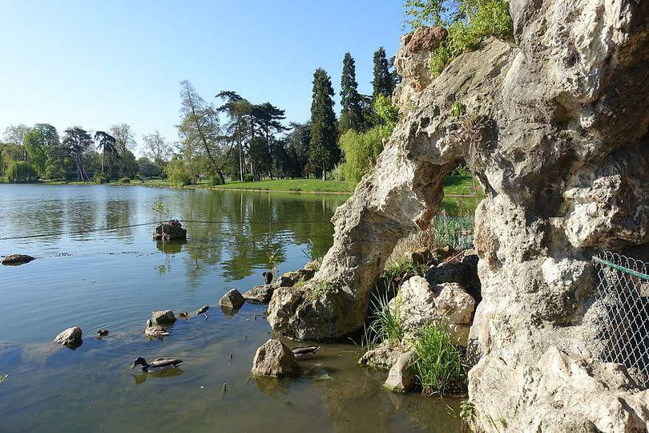
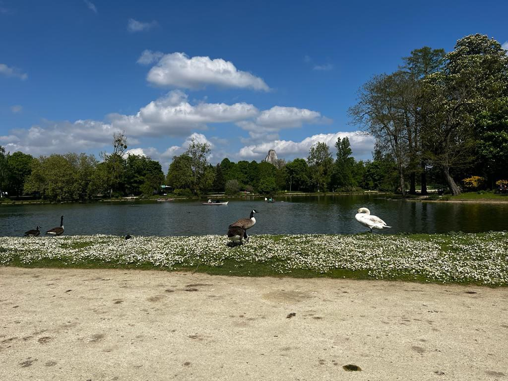
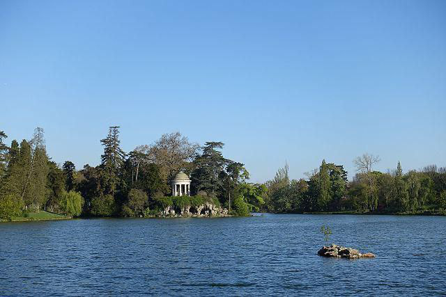
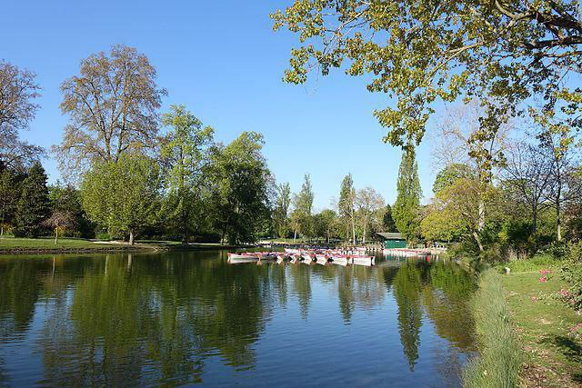

Le lac Daumesnil est bien plus qu’un simple lieu de promenade. Niché au cœur du bois de Vincennes, il constitue un véritable havre de biodiversité, offrant un équilibre parfait entre faune, flore et préservation écologique.
Nature et Environnement
Le lac Daumesnil, une oasis de verdure au cœur de Paris, idéale pour l’évasion et la détente.
Visiter le lac


Une biodiversité exceptionnelle
Le lac abrite une grande variété d’espèces animales et végétales :
Faune locale : cygnes majestueux, canards colverts, hérons et même quelques tortues d’eau douce.
Flore abondante : arbres centenaires, roseaux, nénuphars et une riche végétation qui contribue à la beauté du paysage.
Un engagement écologique
Des initiatives sont mises en place pour préserver cet environnement naturel :
Entretien écologique des espaces verts.
Nettoyage régulier du lac pour préserver la qualité de l’eau.Sensibilisation des visiteurs au respect de la nature avec des panneaux informatifs.



Balade et découverte
Profitez d’un sentier aménagé pour explorer le lac tout en respectant la nature. Des bancs et espaces de repos vous permettent d’admirer la sérénité du lieu et d’écouter le chant des oiseaux.